Ethical hacking
Everything I have done under ethical hacking, in one container: the hands-on scanning lab I ran myself, and the study notes behind it. Open any item to see the details.
The first item is my own lab work. The other items are study notes that use reference images from public sources, credited where the source is visible.
Lab: reconnaissance and network scanningMy own work
Hands-on labs from my ethical hacking training, run on virtual machines in an isolated lab: a Parrot OS attacker against Windows 10 and Windows Server 2016 targets. I gathered information with advanced Google dorking and theHarvester, mapped the target with an Nmap TCP connect scan, and crafted ACK probes with hping3.
The full lab report also covers FTP search engines, Netcraft, Sherlock, deep and dark web searching, passive OS footprinting, and OS discovery with the Nmap script engine and Uniscan.
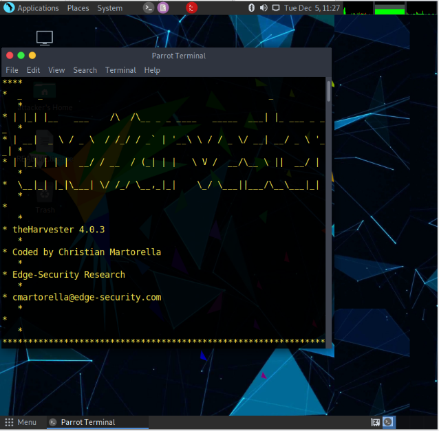
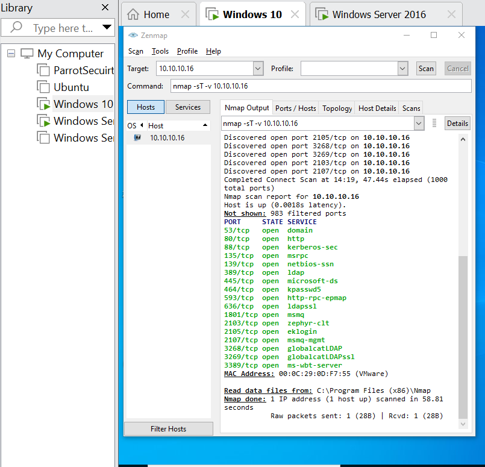
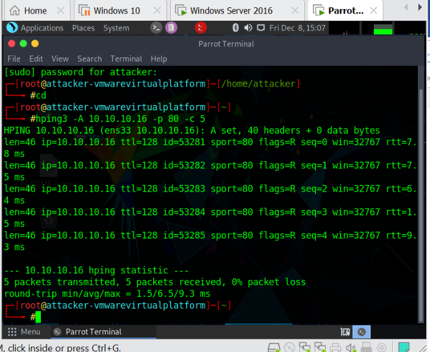
My learning roadmapStudy notes
I am building security skills from the foundations up, because every later step depends on the one before it.
Networking
How devices find and talk to each other: IP addresses, protocols and ports.
Cybersecurity fundamentals
Confidentiality, integrity and availability, common threats, and how defences work.
Ethical hacking
Testing systems with permission to find weaknesses before attackers do. This is the stage I am training in now.
Advanced security specialisations
Deeper tracks such as penetration testing, digital forensics and security operations.
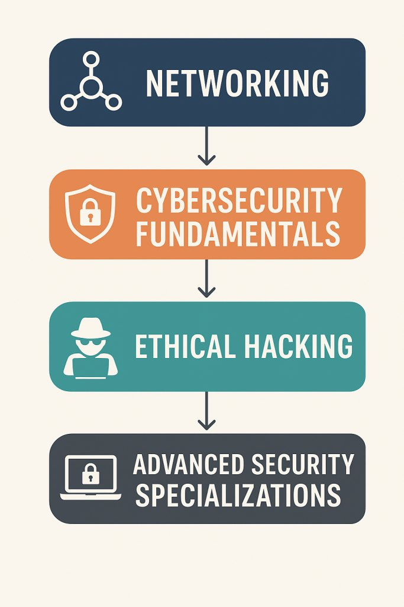
The five phases of ethical hackingStudy notes
A professional security test follows the same order an attacker would, so the tester finds the weaknesses an attacker would find. Each phase feeds the next, and the cycle repeats as systems change.
Reconnaissance
Gather information about the target from public sources or by probing it directly. I practised this with Google dorking and theHarvester.
Scanning and enumeration
Find live hosts, open ports and the services behind them. I practised this with Nmap and hping3.
Gaining access
Use a weakness found in the scan to enter the system, only inside the agreed scope, to prove the risk is real.
Maintaining access
Check whether a foothold could last, so defenders know what to look for.
Clearing tracks
Attackers hide their activity. Testers study this so defenders can detect it, and remove anything they left behind.
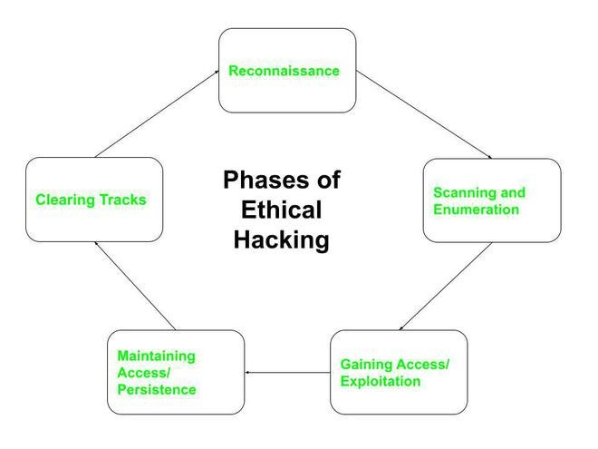
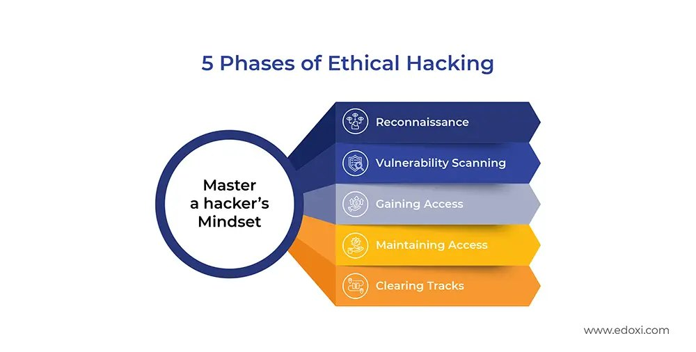
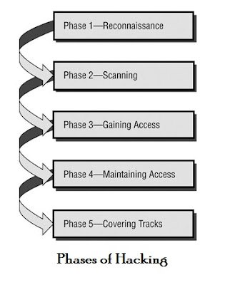
Kali Linux and Parrot Security OSStudy notes
Both are Debian-based Linux systems built for security work. Their tools are grouped by task, such as Information Gathering, Vulnerability Analysis, Password Attacks and Reporting Tools, so each one is easy to find. I run Parrot OS in my lab. Parrot also bundles privacy tools such as AnonSurf, which routes traffic through Tor.
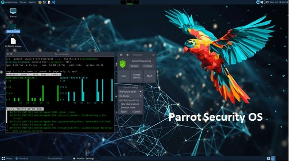
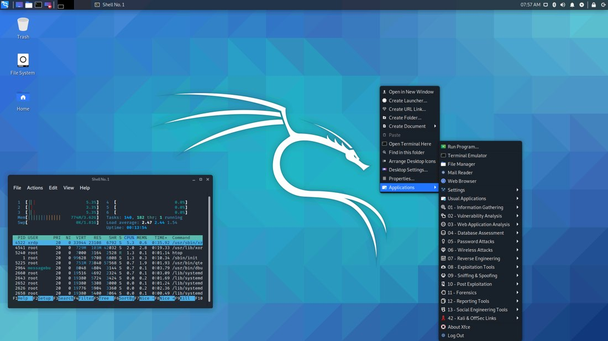
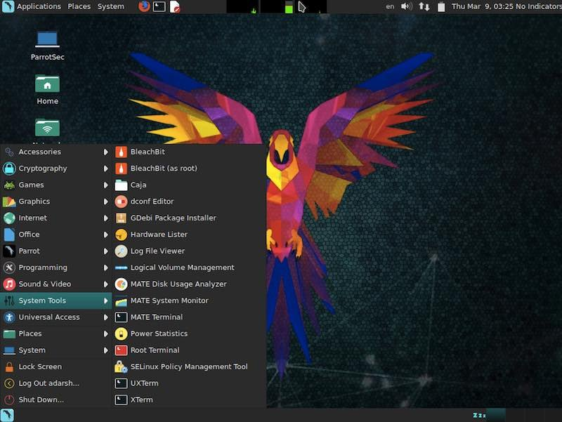
Port scanning with NmapStudy notes
Every network service listens on a numbered port, such as 80 for web pages and 22 for SSH. A port scan checks which ports on a machine accept connections, which shows what services it runs and where it may be exposed. Nmap sends probes to the target and reads the replies.
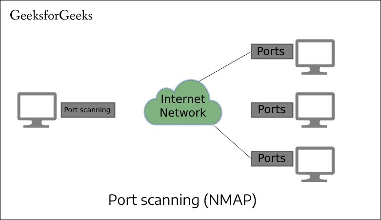
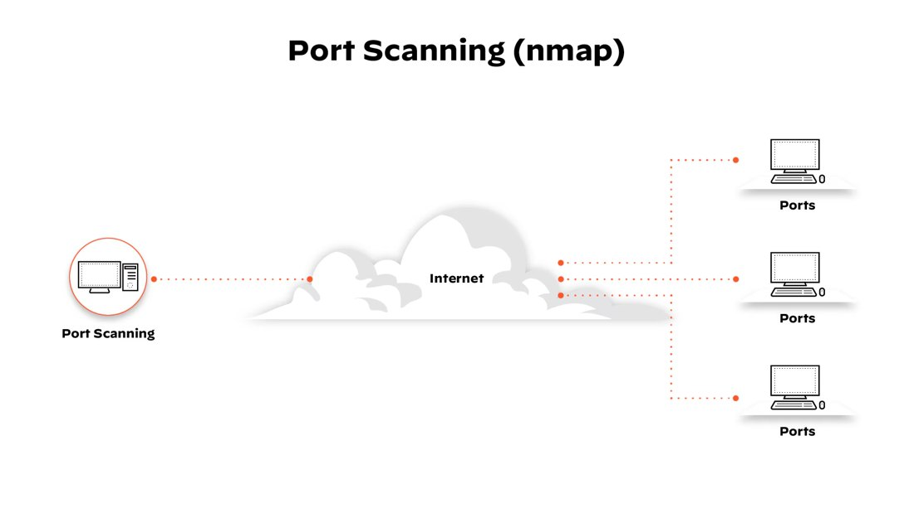
What a TCP connect scan sees
The connect scan (nmap -sT) tries a full TCP handshake with each port, and the reply tells Nmap the port state. I used it in my own lab scan, shown in the first item.
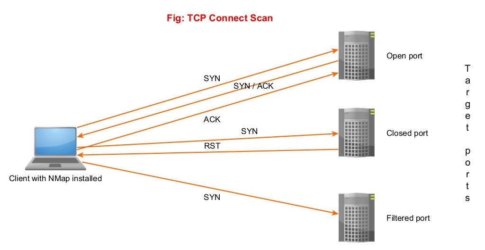
| State | What Nmap sees | What it means |
|---|---|---|
| Open | SYN, then SYN/ACK, then ACK | The handshake completes, so a service is listening. |
| Closed | SYN, then RST | The host replies that nothing is listening on that port. |
| Filtered | SYN, then no reply | A firewall is probably dropping the probe, so Nmap cannot tell. |
Reading Nmap resultsStudy notes
The same tool gives very different output depending on the options. These examples show a default scan, a full-range scan and an aggressive scan.
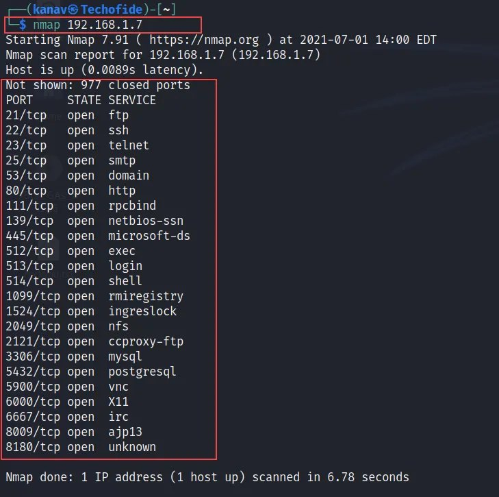
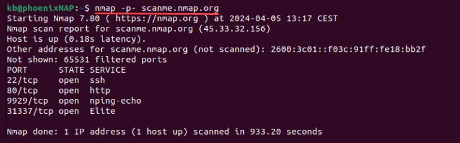
nmap -p- against scanme.nmap.org: 4 open ports in about 15 minutesSource: phoenixNAP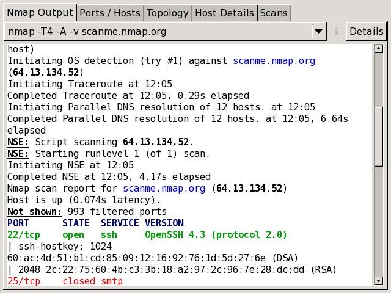
nmap -T4 -A -v| Command | What it does |
|---|---|
nmap <target> | Scans the 1,000 most common TCP ports. |
nmap -sT <target> | TCP connect scan: completes the full handshake and needs no special privileges. |
nmap -p- <target> | Scans all 65,535 ports. Thorough but slow: the example above took about 15 minutes. |
nmap -T4 -A -v <target> | Faster timing, plus OS and version detection, default scripts and traceroute, with verbose output. |
Scan only what you are allowed to scan. Scanning computers without permission can be illegal. I practise in my own isolated virtual lab, and public practice hosts such as scanme.nmap.org exist for this purpose.